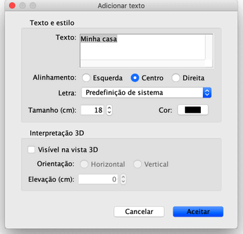

| Adicionar textos | |||
Para adicionar texto livre à planta da casa, escolha Planta > Adicionar textos ou seleccione a ferramenta Adicionar textos. Para adicionar um novo texto, clique na localização desejada na planta e introduza o texto na caixa que surge, tal como esta abaixo.  Uma vez criado o texto, pode alterar o tamanho e estilo no sub-menu Planta > Modificar estilo do texto. Pode também alterar o texto, a letra a cor e o desenho 3D, seleccionando Planta > Modificar texto. Seleccionando Visível na vista 3D no painel de modificação, permite que o texto apareça na vista 3D, orientado na horizontal ou na vertical.
Para terminar a introdução do texto, escolha Planta > Seleccionar ou seleccione a ferramenta Seleccionar (ou outra ferramenta qualquer). Em modo Seleção, pode rodar um texto seleccionado com o seu indicador, ou fazer duplo clique para mostrar o seu painel de modificação. |
|